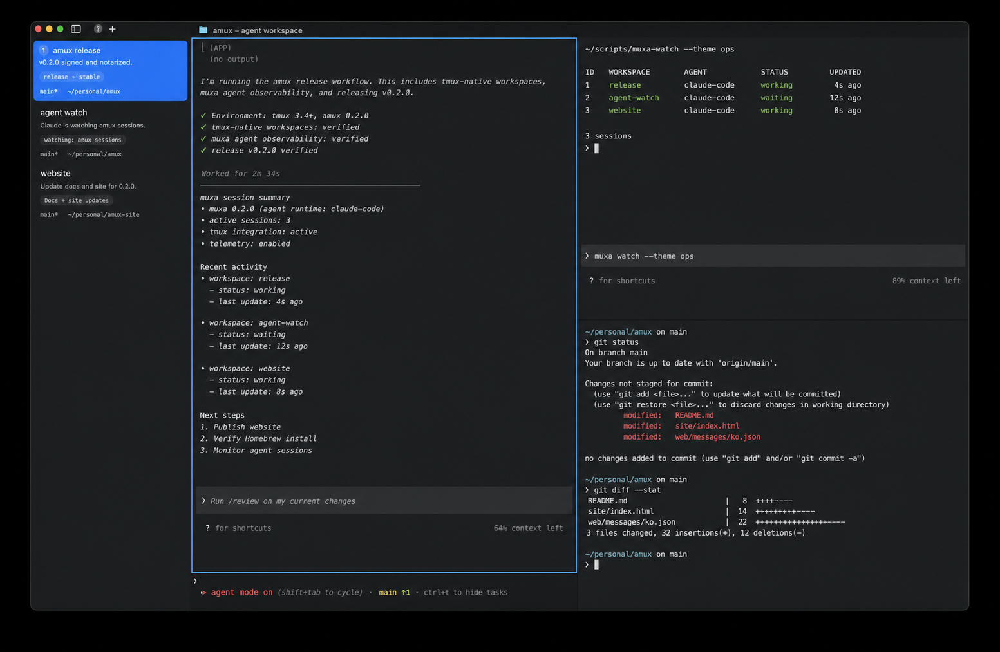

01 / persist
tmux 네이티브 워크스페이스
워크스페이스가 전용 tmux 세션에 대응합니다. 패널 구성, 스크롤백과 프로세스가 앱 종료 후에도 유지됩니다.

agent mux / macOS 14+
에이전트의 작업도, 워크스페이스의 상태도 계속 이어집니다.
모든 워크스페이스를 실제 tmux 세션으로 유지하고, muxa로 어떤 에이전트에 판단이 필요한지 보여주며, Cmd+K로 전체 작업을 하나의 전환기에서 여는 네이티브 터미널입니다.
하나의 영속 모델
창을 닫거나 prefix로 detach하고, SSH로 다시 연결하거나 다른 터미널에서 attach해도 셸은 그대로 유지됩니다. amux는 그 세션을 빠른 네이티브 Ghostty surface로 투영합니다.
에이전트 작업을 위한 설계
01 / persist
워크스페이스가 전용 tmux 세션에 대응합니다. 패널 구성, 스크롤백과 프로세스가 앱 종료 후에도 유지됩니다.
02 / observe
작업 중, 입력 대기, 선택 대기, 오류 상태를 tmux 패널과 연결해 한곳에서 보여줍니다.
03 / attend
Cmd+Shift+J가 가장 오래 막혀 있던 에이전트로 바로 이동해 터미널을 일일이 확인할 필요가 없습니다.
04 / connect
Cmd+K에서 일반 셸, 로컬 tmux 세션, 원격 세션을 명확히 구분하고 검색합니다.
05 / automate
포커스를 빼앗지 않고 분할 생성, 프롬프트 전송, 화면 읽기, 알림 라우팅과 브라우저 제어가 가능합니다.
06 / render
중첩된 tmux UI나 Electron 없이 세션을 macOS 네이티브 인터페이스에 직접 렌더링합니다.